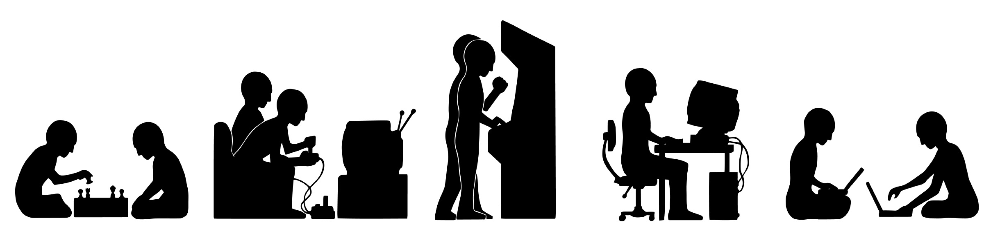

|  | |
|
Despre jocurile videoUn joc video este un joc electronic în care se interactioneaza cu o interfata grafica pentru a genera raspuns vizual pe un ecran. Jocurile video în general au un sistem de recompensare a utilizatorului, de obicei se tine scorul, acest sistem depinzând de îndeplinirea unor anumite obiective în joc. In ultimii ani industria jocurilor video a avut o crestere in zona comerciala, ajungandu-se ca in 2015 sa obtina vanzari de peste 74 de miliarde de dolari.Acest proiect va parcurge pe scurt drumul parcurs de aceasta industrie de la inceputurile ei pana la ultimile creatii de top. | |